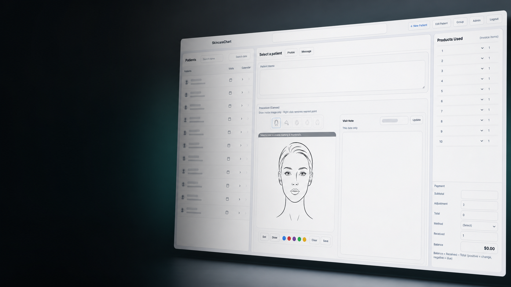
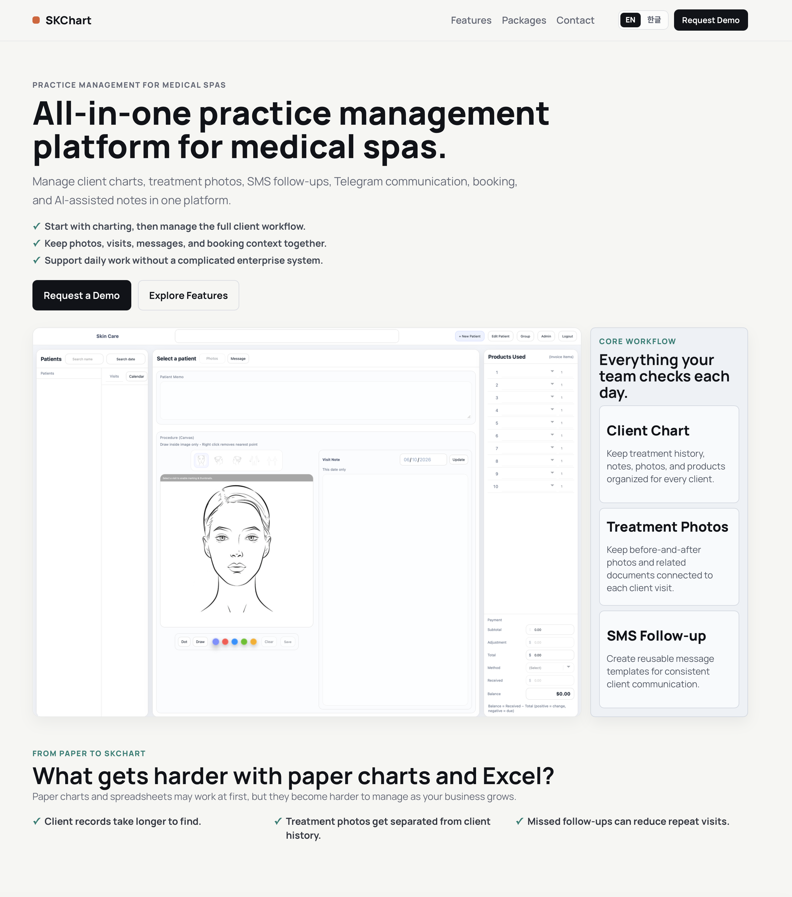

South Korea pediatrics, documentation, clinic operations.

Physician with 20+ years clinical practice in South Korea Daily EMR use + workflow automation
Chaehyeok Lee
I apply clinical informatics thinking to real workflow problems: observe clinical work, design practical systems, operate them, and improve the next bottleneck.
Explore healthcare workflow projects developed from real clinical practice.
Resume
Clinical Informatics, Healthcare IT, and Healthcare Data profile.
SKChartHealthcare workflow platform developed from daily clinical documentation needs.
Development LogClinical workflow problems, implementation decisions, and iteration notes.
ContactRecruiter contact for Clinical Informatics and Healthcare IT roles.
Daily EMR use, workflow analysis, vendor collaboration.
Tools designed from real healthcare operations.
Design, operate, evaluate, and improve.
Observe. Build. Operate. Improve.
Physician background, EMR fluency, hands-on implementation.
Recruiter focus: Clinical Informatics, Healthcare IT, Digital Health.
Platform Evolution
20+ years of care, operations, EMR use.
Documentation, communication, staff bottlenecks.
Documentation and workflow foundation.
Communication automation layer.
Staff operations layer.
One evolving workflow platform.
Featured Project: SKChart
Overview
SKChart is a healthcare workflow platform developed from real clinical practice, daily EMR use, and clinic documentation bottlenecks.
Open SKChart case studyClinical Problem
Charting, visit notes, photos, documents, payments, and staff handoffs were fragmented across separate workflows.
Solution
A patient-centered documentation foundation that follows the sequence of clinical and operational work.
Key Features
- Patient profiles and visit history
- Visit notes and treatment documentation
- Clinical photos grouped by visit
- Consent documents, payments, reporting, and roles
Technology Stack
Python, Flask, SQLite, HTML, CSS, JavaScript, Git/GitHub.
Development Log
Built through observation, implementation, real workflow use, and iterative refinement.
View development logScreenshots
Sanitized screenshots only. No patient data, credentials, or private clinic information.

Future Roadmap
Continue integrating documentation, communication, and staff operations into one Clinical Informatics workflow platform.
Clinical Workflow Impact
Documentation: structured visit context, notes, and longitudinal review.
Workflow: fewer disconnected handoffs between charting, files, and operations.
Communication: exposed the need for Skmsg appointment messaging workflows.
Operations: connected clinical records with payment, reporting, and staff roles.
One platform, three stages.
Stage 01 / Clinical Documentation Foundation
SKChart
- Problem
- Fragmented documentation, photos, payments, visit notes.
- Built
- Clinical workflow foundation from real clinic operations.
- Next discovered
- Communication bottleneck led to Skmsg.
- Stack
- Python, Flask, SQLite, HTML, CSS, JavaScript, Git.
Stage 02 / Messaging
Skmsg
- Problem
- Real use exposed communication bottlenecks.
- Built
- Communication automation layer.
- Next discovered
- Staff access bottleneck led to Telegram CRM.
- Stack
- Python, Flask, SQLAlchemy, PostgreSQL, Railway, Twilio, Google Calendar.
Stage 03 / Staff Ops
Telegram CRM Bridge
- Problem
- Operating both systems exposed staff workflow limits.
- Built
- Staff operations layer.
- Next discovered
- Continues toward one integrated platform.
- Stack
- Node.js, TypeScript, Telegram Bot API, webhooks, feature flags.
Clinical practice, operations, and technology implementation.
Founder / Clinical Informatics & Workflow Automation Lead
JE The Line, LLC. Clinic workflow software, messaging automation, and staff operations.
Chief of Pediatrics
Tonton Children's Hospital, South Korea. Pediatric operations, protocols, workflows, and documentation.
Pediatric Emergency Department Attending Physician
CHA University Bundang Medical Center. Pediatric emergency care, EMR documentation, and data review.
Medical Assistant Roles, USA
Livingstone Medical Clinic and Anapa Pain Clinic. EMR, scheduling, referrals, and workflow coordination.
Physician & Owner
JE Pediatrics, South Korea. Owned and operated a pediatric outpatient clinic.